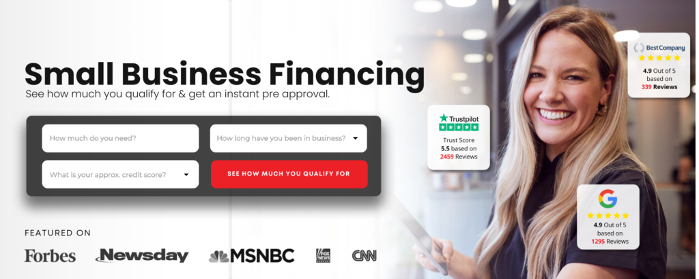

A bank denial doesn't mean the money doesn't exist — it means that particular lender, using its particular criteria, said no. The week after a denial is the most important week for your cash-flow plan, and moving quickly through the right steps can still get you funded.
Here is exactly what to do, day by day, so you don't lose momentum or make a costly mistake out of frustration.
Day 1: Get the Actual Reason in Writing
Under the federal Equal Credit Opportunity Act, a lender that turns down your business credit application has to tell you, and you have the right to know the specific reasons. If you don't already have them in writing, call the loan officer and ask before you do anything else.
Common reasons include:
- Insufficient time in business (most banks want two or more years)
- Personal or business credit score below their threshold
- Debt-service coverage ratio too low (not enough net income relative to what you'd owe)
- Industry category flagged as high-risk
- Lack of collateral
Read the reason carefully. It tells you whether the problem is fixable quickly, fixable over time, or simply a mismatch between your profile and that lender's box.
Day 2: Pull Your Business Credit Profile
Most business owners are surprised to learn they have a business credit file separate from their personal credit — and that many lenders check it without telling you. Before you apply anywhere else, you need to see what lenders are seeing.
Check for:
- Accounts reporting under your EIN (not just your SSN)
- Any negative marks or collections tied to your business
- Whether your business address and entity information match across bureaus
- Your Paydex score (Dun & Bradstreet) and Experian Business score
Free business credit monitoring tools let you see a snapshot without triggering a hard inquiry. Understanding your profile before you apply anywhere new prevents you from burning additional hard pulls on lenders whose minimums you don't meet.
Day 3: Map Your Actual Cash Need
Frustration after a denial can push business owners to over-apply — chasing the largest number they think they can get rather than the amount that actually solves the problem in front of them. Pause and get specific.
Write down:
- The exact dollar amount you need and what it covers (payroll, equipment, inventory, a slow-paying invoice)
- How quickly you need it in hand
- What your business brings in per month on average — your revenue is the key variable most alternative lenders use
- How much of a daily or weekly payment your cash flow can actually carry
This exercise does two things. It clarifies what product type you actually need, and it prepares you to move through any application quickly once you choose a path.
Day 4: Understand Why Alternative Lending Uses Different Criteria
Traditional banks underwrite primarily on credit history, collateral, and time in business. Alternative lenders and lending marketplaces weight your business's revenue and recent bank statements much more heavily. That distinction is why a business that a bank turns away may still qualify with a different type of lender.
Here is a quick comparison of how the two approaches differ:
| Factor | Traditional Bank | Alternative / Marketplace Lender |
|---|---|---|
| Primary underwriting signal | Credit score + collateral | Business revenue + bank statements |
| Minimum credit score (typical) | 680–720+ | 500+ considered in many cases |
| Time in business | 2 years minimum common | Varies; some programs available sooner |
| Funding speed | Weeks to months | Often days; some programs fund in 1–3 days |
| Number of lenders reviewing your file | One | Multiple lenders compete on one application |
The table above illustrates why the same file that gets declined at a bank may attract competing offers elsewhere. More lenders reviewing one application means a better chance of a match — and competition among lenders can mean better terms for you.
Day 5: Submit One Application to a Lending Marketplace
Once you know your numbers, submit a single application through a marketplace that routes your file to multiple lenders simultaneously. This matters because applying to five separate lenders individually means five separate hard pulls and five separate processes. Many marketplaces check your rate with a soft pull first, then connect you to lenders who are actually competing for your business.
ROK Financial works this way: one application goes to a network of lenders. ROK lists working capital and business loans from $10,000 to $5 million, with funding in as little as 1–3 days depending on the program and your documentation. To qualify, ROK asks for 6 months in business, $10K+ in monthly sales and a credit score of 500 or higher.
Day 6: Gather Your Documents Before You're Asked
Speed in alternative lending is often determined by how fast you can return documentation. While your application is being reviewed, get these ready:
- Three to six months of business bank statements
- Your most recent business tax return (if you have one)
- A government-issued ID
- Your EIN and basic business formation documents
- A voided business check for your operating account
Having these staged — not scrambled for — can shave hours or a full day off your turnaround time once a lender comes back with an offer.
Day 7: Evaluate Offers Against Your Cash Flow, Not Just the Amount
If offers come in, resist the urge to accept the largest one automatically. Read the repayment structure first. Revenue-based programs typically repay a percentage of daily or weekly deposits. Ask yourself: at my average monthly revenue, what does this repayment actually look like week to week?
Questions worth asking before you sign:
- What is the factor rate or APR?
- Is this a fixed daily debit or a percentage of deposits?
- Is there a prepayment benefit if I pay it off early?
- What happens if I have a slow month?
An offer that funds your immediate need but strains your daily operating cash is a problem you'll feel within 30 days. Match the repayment structure to what your revenue can actually support.
The Week After That: Fix What the Bank Flagged
Once your immediate cash need is covered, go back to the adverse action notice and make a plan. If the issue was business credit, start building trade lines. If it was time in business, keep your banking activity clean and consistent. If it was a debt-service ratio, work on reducing fixed obligations over the next 6–12 months.
Alternative funding is a bridge, not a permanent replacement for a strong banking relationship. Use the bridge, then build the profile that opens more doors later.
If you're in that window right now — bank just said no and you need to know your options — ROK Financial lets you submit one application and see what lenders are willing to offer without committing to anything upfront.
JWAT Enterprises Inc may earn a commission if you apply through these links, at no cost to you. JWAT is not a lender. This is not financial advice.

ROK Financial: One Application, Multiple Lenders Competing for Your Deal
ROK Financial lets you submit one application and have lenders compete to fund you—$10K–$5M available, funding in as little as 1–3 days, and credit scores from 500 considered (6 months in business and $10K+ in monthly sales required).
Check Your Rate with ROK Financial →Affiliate disclosure: JWAT Enterprises Inc may earn a commission if you apply through links on this page, at no cost to you. JWAT is not a lender. Not financial advice.
← Back to Blog